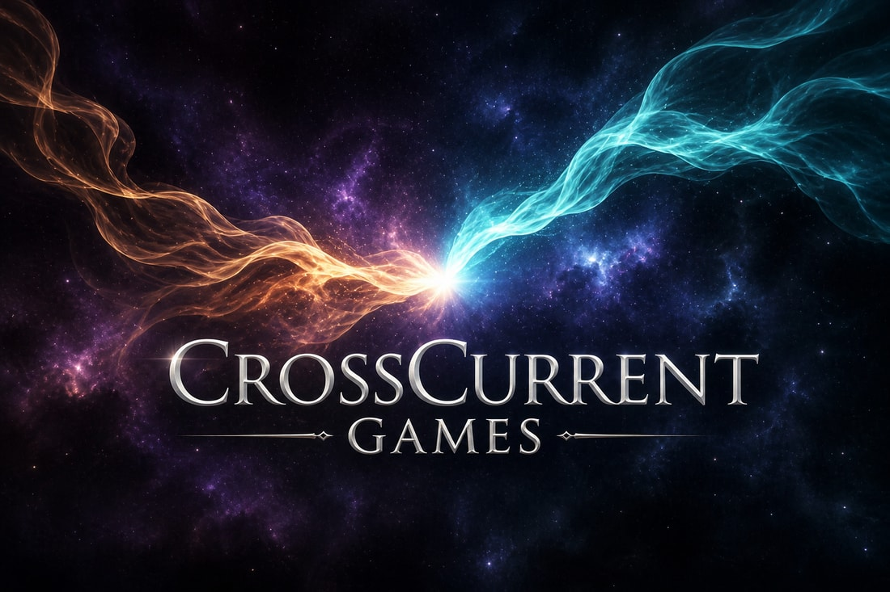
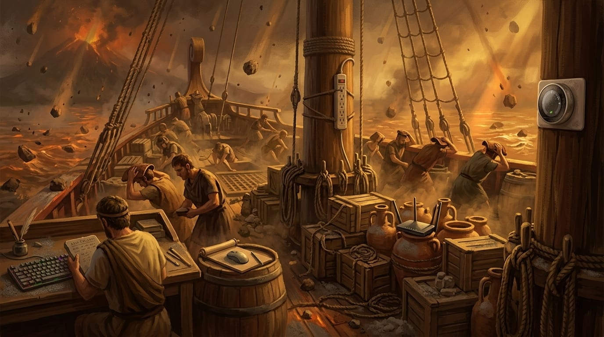
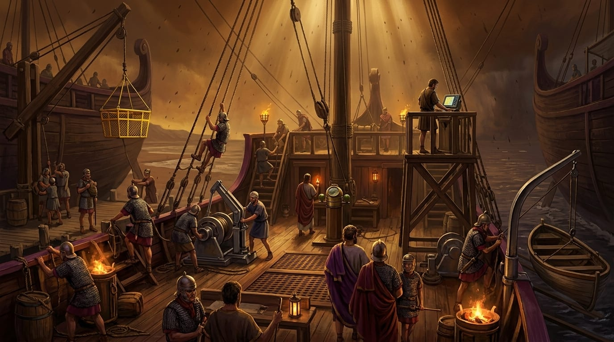
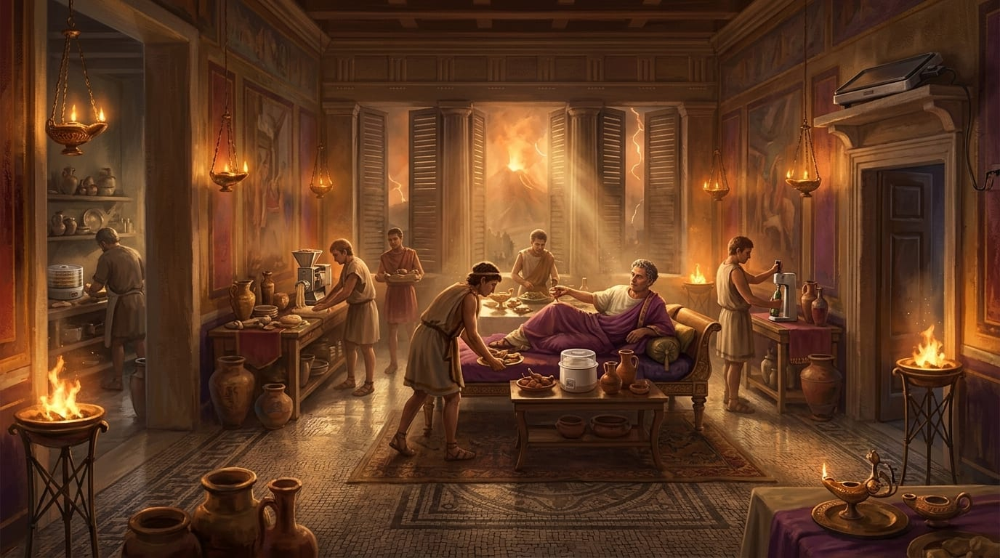
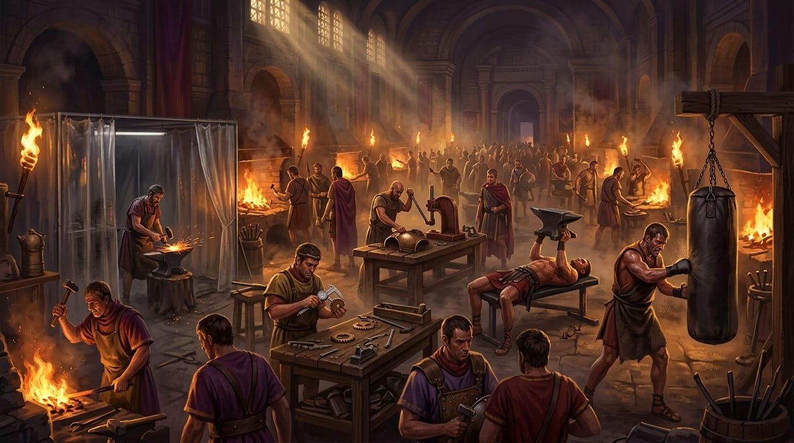
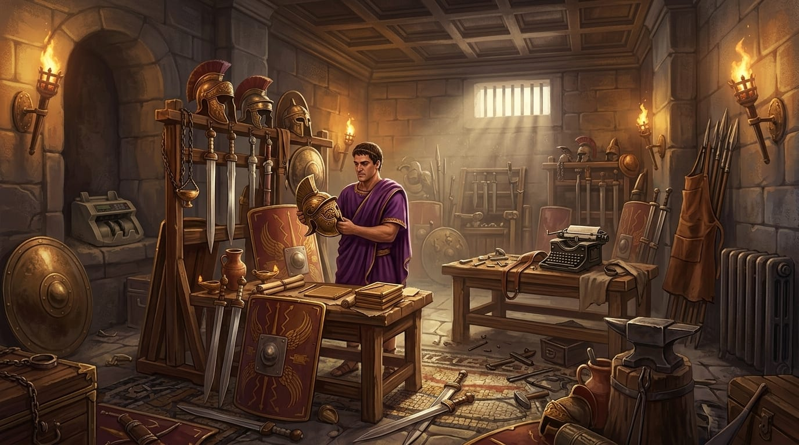
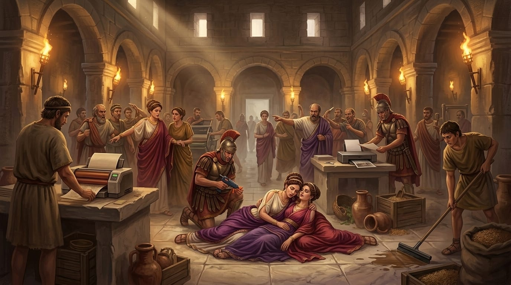
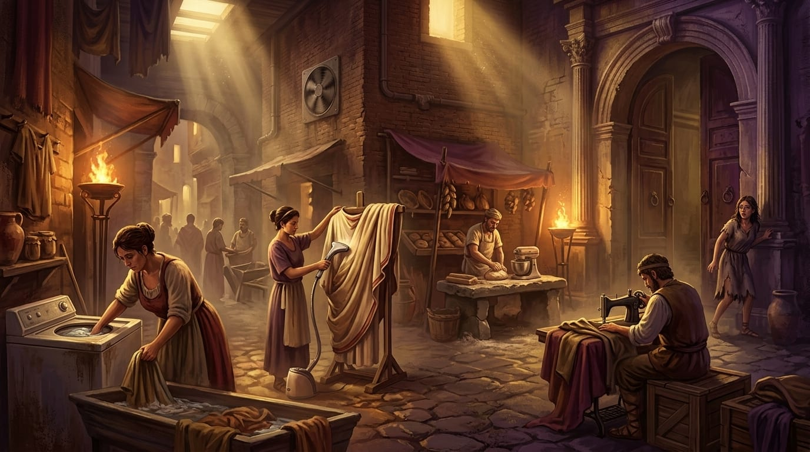

Trapped in Time
An adventure through history. Find what doesn't belong, and discover why.
Dr. Veda Cross built a device to safely watch history unfold. During its final calibration, the device shattered, scattering fragments of the present across the past and pulling her in after them. Now she's trapped in ancient Rome, racing to find every anomaly she caused before history itself comes undone.
About CrossCurrent Games
CrossCurrent Games is an independent studio built around a simple belief: history is one of the richest, most underused playgrounds in entertainment, and mobile games are one of the best ways to put it back in people's hands. We're a small, focused team obsessed with craft. Every scene in our flagship title is hand directed and hand approved before it ever reaches a player, using a modern production pipeline that lets a small studio produce content with the visual polish of a much larger one, without cutting corners on quality control.
Our name comes from the idea at the center of our first game: two currents, the present and the past, crossing into one another, and the discoveries that happen at that intersection.

Trapped in Time
An Adventure through History!
Trapped in Time is a premium mobile puzzle adventure built around a single, instantly satisfying idea: watch a beautifully illustrated historical scene, spot the one object that doesn't belong, and learn the real story behind why it's wrong. It's the calm, clever, endlessly replayable feeling of noticing something, wrapped around a time travel story with real emotional stakes.
Guided by Veda Cross, players journey through the most pivotal, dramatic moments in history: a fleet launching into the shadow of an erupting Mount Vesuvius, a legion humiliated at the Caudine Forks, a court gripped by poison and paranoia, an emperor's obsession with the arena. Every discovery repairs a little more of the timeline.
One clean core loop
Watch. Spot. Learn. Every session resolves in seconds, and every win teaches a real historical fact.
Museum quality art, game paced delivery
Every scene is a fully painted historical tableau, not a stock photo and not a filter.
A real story, not just a level list
Veda Cross's journey home gives every chapter a reason to matter.
A living world to come home to
Veda's Companions, a sanctuary of adoptable animal allies, grows alongside the player's progress through history.
Built to respect players
A transparent, player first economy with no loot boxes, no randomized purchases, and no artificial urgency.
Designed to scale
The Roman Chronicles are chapter one of a much larger map of history.
One World Down. History Left to Explore.
Trapped in Time launches with the Roman Chronicles, a four act arc spanning the full sweep of Roman history:
- The Roman RepublicThe early trials that forged an empire.
- The Early Roman EmpireAmbition, expansion, and the eruption of Vesuvius.
- The Peak of the Roman EmpireThe height of imperial power, and its darkest obsessions.
- The Decline of the Roman EmpireThe slow unraveling of the world Veda thought she understood.
Rome is only the beginning. Trapped in Time is built on a content engine designed from day one to expand across history, with future Chronicles already mapped for:
Every new era plugs into the same core loop, the same production pipeline, and the same story engine, turning Trapped in Time from a single game into an open map of world history still waiting to be explored.







Depth Beyond the Puzzle
Every discovery in Trapped in Time feeds a deeper world. Solve scenes to earn Gold Coins and Timeshards. Unlock Veda's Companions, a growing sanctuary of adoptable animal allies, each with their own personality, wardrobe, and daily letters home. Watch your progress compound into something worth returning to every day.
We built the entire in-game economy around one rule: respect the player. That means:
- ✦No loot boxes. No randomized purchases, ever. Every purchase shows you exactly what you're getting before you buy it.
- ✦No fake urgency. We don't run countdown timers or "limited time" pressure on things that are actually always available.
- ✦Honest pricing. Value badges and "best rate" labels are calculated from real numbers, never invented for marketing effect.
- ✦A free path forward, always. Every system in the game, including help for players who go on vacation, has a way to progress without spending a dollar.
It's the kind of monetization discipline you'd expect from a much larger studio, built in from the very first design document.
Why Now
Casual puzzle games are one of the largest and most durable categories in mobile, and "edutainment" hybrids that teach something real are proving to have exceptional retention, because players don't just enjoy them, they feel good about the time they spend in them. Trapped in Time sits at the intersection of three proven, growing categories: hidden object puzzles, premium narrative mobile games, and casual collection and pet care loops. All of it is anchored by a genre with almost universal appeal and almost no competitive crowding: history itself.
With a production pipeline built to generate premium, hand approved art at a fraction of traditional cost, and a content roadmap that already spans seven historical worlds, CrossCurrent Games is positioned to do something rare in mobile gaming: ship a single, coherent, expanding universe rather than a single hit.
Our Team
CrossCurrent Games is a small, independent studio built around a simple discipline: every scene, every system, and every line of copy gets reviewed by a human before it reaches a player. We're builders first, a tight team spanning game design, historical research, and art direction, working with a modern production pipeline that lets a studio our size ship content with the polish of a much larger one.
We're deep in production on the Roman Chronicles right now. If you're a player, press, or partner who wants to know more about who's behind CrossCurrent Games, reach out below. We read every email ourselves.
Contact
We're always happy to hear from players, press, and potential partners.
Every inquiry reaches the same inbox, and we read each one ourselves.
developer@crosscurrentgames.comStandard boilerplate for press use:
CrossCurrent Games is an independent mobile game studio, creator of Trapped in Time, a premium historical puzzle adventure launching on iOS. CrossCurrent Games is built around hand crafted, historically grounded art and player first game design. Learn more at crosscurrentgames.com.